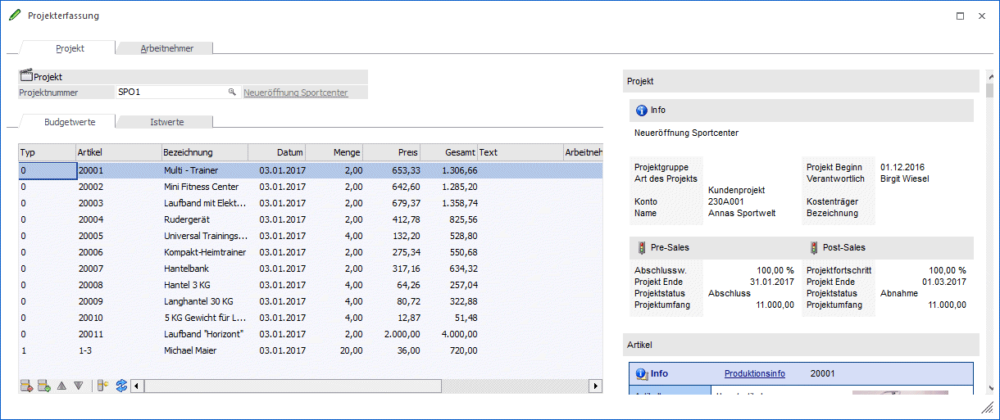
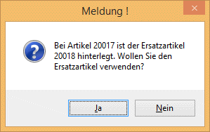
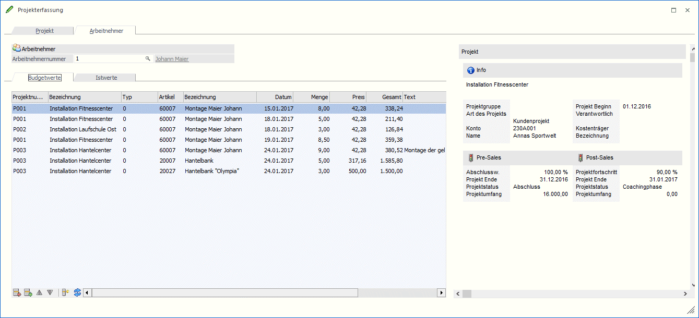
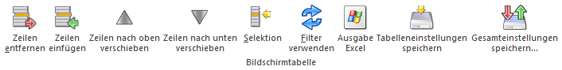
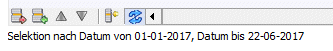
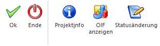

In der Projekterfassung werden sowohl die Budgetwerte als auch die Istwerte zu einem Projekt erfasst. Die Projekterfassung kann entweder über den Menüpunkt…
1 WinLine FAKT
1 Erfassen
1 Projektverwaltung
1 Projekterfassung
… geöffnet werden oder im Projektstamm durch Drücken des Buttons "Budget" - damit können dann aber nur Budgetwerte erfasst werden, die Option "Istwerte" kann hier nicht angewählt werden.
Dabei kann die Erfassung von Projekten auf 2 unterschiedliche Arten erfolgen:
ü Erfassung nach Projekten
In dem
Fall wird zuerst das Projekt aufgerufen, dazu werden dann alle entsprechenden
Zeilen erfasst.
ü Erfassung nach Arbeitnehmer
In
diesem Fall wird zuerst der Arbeitnehmer eingetragen (muss im WinLine LOHN
angelegt sein), danach werden dann die einzelnen Zeilen pro Projekt erfasst.
Demnach ist das Fenster auch in 2 Register unterteilt, wo die enterschiedlichen Erfassungsvarianten durchgeführt werden können.
Eingabefelder im Register Projekt
Ø Projektnummer
In diesem Feld wird die gewünschte Projektnummer eingegeben. Durch Drücken der F9-Taste kann nach allen Projekten gesucht werden. Nach Bestätigung der Projektnummer können die Detailinformationen zum Projekt wie "Bezeichnung des Projekts", "Kundennummer" und "Kundenname", die Projektstati und der "Projektbeginn" in einem eigenen OIF angezeigt werden.
Ø Budgetwerte / Istwerte
Durch Anwählen des entsprechenden Registers können Budget- bzw. Istwerte erfasst werden.

Eingabefelder in der Tabelle:
Ø Typ
Aus der Auswahllistbox kann der Erfassungstyp ausgewählt werden. Dabei stehen die Typen "Artikel" und "Ressource" zur Verfügung.
Ø Artikel/Ressource
Je nach ausgewähltem Typ kann in diesem Feld entweder die Artikelnummer oder die Ressourcennummer hinterlegt werden. Für beide Datentypen steht auch die Matchcodefunktion zur Verfügung. Wenn ein Artikel mit Ersatzartikel erfasst wird, wird - je nach Einstellung im Artikel - eine unterschiedliche Aktion ausgelöst:
Wenn im Artikelstamm im Feld
Ø autom. Ersatz
die Option
ü 0: nie automatisch ersetzen
hinterlegt ist, wird der Artikel ganz normal geöffnet und kann wie gewohnt bearbeitet werden.
Wenn im Artikelstamm im Feld
Ø autom. Ersatz
die Option
ü 1: immer automatisch ersetzen
eingestellt ist, wird automatisch der Ersatzartikel verwendet. Abhängig von der Einstellung im Feld
Ø Verwendung
wird dann der erste Artikel oder ggf. auch ein kaskadierter Artikel verwendet.
Wenn im Artikelstamm im Feld
Ø autom. Ersatz
die Option
ü 2: fragen
hinterlegt, dann wird eine Meldung angezeigt:

Wird die Meldung mit JA beantwortet, dann wird der Ersatzartikel verwendet. Wird die Meldung mit NEIN beantwortet, dann wird der Artikel verwendet, der ursprünglich eingegeben wurde.
Ø Bezeichnung
Abhängig von der Eingabe im Feld "Artikel" / "Ressource" wird hier die entsprechende Bezeichnung angezeigt.
Ø Datum
Eingabe des Datums zu dem das Budget bzw. der Istwert erfasst wurde. Mit der Taste F3 kann das aktuelle Tagesdatum übernommen werden, mit der F9-Taste kann die Kalenderfunktion aufgerufen werden.
Ø Menge
Eingabe der Stückzahl beim Typ Artikel; Eingabe der Stundenanzahl beim Typ Ressource.
Ø Preis
Handelt es sich dabei um ein Projekt mit einem Kunden, wird beim Typ Artikel der Preis des Artikels lt. Preisliste des Kunden vorgeschlagen. Bei Ressourcen wird der hinterlegte Stundensatz vorgeschlagen (Ressourcenstamm in der Produktion)
Ø Gesamt
Anzeige des Gesamtwerts der Zeile
Ø Flag für Fakturierung
Werden Istzeiten erfasst, können pro Zeile die folgenden Optionen gesetzt werden:
ü 0 - wird extern
verrechnet
Können im Menüpunkt Projekt einlesen in einen Beleg zur
Fakturierung übergeben werden.
ü 1 - wird intern
verrechnet
Können ebenfalls im Menüpunkt Projekt einlesen in einen Beleg
übergeben werden, allerdings mit Preis 0.
ü 2 - wird intern verrechnet -
kalkulierter Aufwand
Diese Zeilen werden beim Soll-Ist Vergleich mit
ausgegeben. Über den Menüpunkt Projekt einlesen können die Artikel auch
automatisch vom Lager abgebucht werden.
ü 3 - wird intern verrechnet -
außerordentlicher Aufwand
Werden bei den Istkosten separat ausgewiesen. Über
den Menüpunkt Projekt einlesen können die Artikel auch automatisch vom Lager
abgebucht werden.
Ø Text
Eingabe einer Beschreibung zu der Zeile.
Ø Arbeitnehmer / Name
Eingabe des Arbeitnehmers (hier wird auf die Stammdaten aus der Lohnverrechnung zurückgegriffen)
Eingabefelder im Register Arbeitnehmer
Ø Arbeitnehmernummer
In diesem Feld wird die AN-Nummer eingetragen, für die Projektzeilen erfasst werden sollen. Der Arbeitnehmer muss im WinLine LOHN als AN-Stamm angelegt sein. Wird eine AN-Nummer eingetragen, wird daneben der entsprechende Namen angezeigt.
Ø Budgetwerte / Istwerte
Durch Anwählen des entsprechenden Registers können Budget- bzw. Istwerte erfasst werden.

Eingabefelder in der Tabelle:
Ø Projektnummer / Bezeichnung
In diesem Feld wird die gewünschte Projektnummer eingegeben, im Feld daneben wird dann die entsprechende Bezeichnung des Projekts angezeigt. Durch Drücken der F9-Taste kann nach allen Projekten gesucht werden. Nach Bestätigung der Projektnummer werden die Detailinformationen zum Projekt im eigenen OIF angezeigt. Dazu gehören Informationen wie "Bezeichnung des Projekts", "Kundennummer" und "Kundenname" und der "Projektbeginn", sowie der jeweils aktuelle Status des Projekts, wobei sowohl die Pre-Sales, als auch die Post-Sales Stati mit ihren jeweiligem Projektumfang, Prozentsatz und dem voraussichtlichen Projektende angezeigt werden.
Ø Typ
Aus der Auswahllistbox kann der Erfassungstyp ausgewählt werden. Dabei stehen die Typen "Artikel" und "Ressource" zur Verfügung.
Ø Artikel/Ressource
Je nach ausgewähltem Typ kann in diesem Feld entweder die Artikelnummer oder die Ressourcennummer hinterlegt werden. Für beide Datentypen steht auch die Matchcodefunktion zur Verfügung. Wenn ein Artikel mit Ersatzartikel erfasst wird, wird - je nach Einstellung im Artikel - eine unterschiedliche Aktion ausgelöst:
Wenn im Artikelstamm im Feld
Ø autom. Ersatz
die Option
ü 0: nie automatisch ersetzen
hinterlegt ist, wird der Artikel ganz normal geöffnet und kann wie gewohnt bearbeitet werden.
Wenn im Artikelstamm im Feld
Ø autom. Ersatz
die Option
ü 1: immer automatisch ersetzen
eingestellt ist, wird automatisch der Ersatzartikel verwendet. Abhängig von der Einstellung im Feld
Ø Verwendung
wird dann der erste Artikel oder ggf. auch ein kaskadierter Artikel verwendet.
Wenn im Artikelstamm im Feld
Ø autom. Ersatz
die Option
ü 2: fragen
hinterlegt, dann wird eine Meldung angezeigt:
Wird die Meldung mit JA beantwortet, dann wird der Ersatzartikel herangezogen. Wird die Meldung mit NEIN beantwortet, dann wird der Artikel verwendet, der ursprünglich eingegeben wurde.
Ø Bezeichnung
Abhängig von der Eingabe im Feld "Artikel" / "Ressource" wird hier die entsprechende Bezeichnung angezeigt.
Ø Datum
Eingabe des Datums zu dem das Budget bzw. der Istwert erfasst wurde. Mit der Taste F3 kann das aktuelle Tagesdatum übernommen werden, mit der F9-Taste kann die Kalenderfunktion aufgerufen werden.
Ø Menge
Eingabe der Stückzahl beim Typ Artikel; Eingabe der Stundenanzahl beim Typ Ressource.
Ø Preis
Handelt es sich dabei um ein Projekt mit einem Kunden, wird beim Typ Artikel der Preis des Artikels lt. Preisliste des Kunden vorgeschlagen. Bei Ressourcen wird der hinterlegte Stundensatz vorgeschlagen (Ressourcenstamm in der Produktion)
Ø Gesamt
Anzeige des Gesamtwerts der Zeile
Ø Flag für Fakturierung
Werden Istzeiten erfasst, können pro Zeile die folgenden Optionen gesetzt werden:
ü 0 - wird extern
verrechnet
Können im Menüpunkt Projekt einlesen in einen Beleg zur
Fakturierung übergeben werden.
ü 1 - wird intern
verrechnet
Können ebenfalls im Menüpunkt Projekt einlesen in einen Beleg
übergeben werden, allerdings mit Preis 0.
ü 2 - wird intern verrechnet -
kalkulierter Aufwand
Diese Zeilen werden beim Soll-Ist Vergleich mit
ausgegeben. Über den Menüpunkt Projekt einlesen können die Artikel auch
automatisch vom Lager abgebucht werden.
ü 3 - wird intern verrechnet -
außerordentlicher Aufwand
Werden bei den Istkosten separat ausgewiesen. Über
den Menüpunkt Projekt einlesen können die Artikel auch automatisch vom Lager
abgebucht werden.
Ø Text
Eingabe einer Beschreibung zu der Zeile.
Tabellenbuttons

Ø Zeilen entfernen
Mit dem Entfernen-Button können Zeilen aus der Tabelle entfernt werden.
Ø Zeilen einfügen
Mit dem Entfernen-Button können Zeilen aus der Tabelle entfernt werden.
Ø Zeilen nach oben/unten verschieben
Mit diesen Buttons können die Zeilen in der Tabelle an gewünschte Position verschoben werden
Ø Selektion
Durch Anwählen dieses Buttons wird das Selektionsfenster geöffnet. Darin können Einschränkungen der Tabelle erfolgen. Wenn eine Einschränkung nach AN oder Projekt vorgenommen wird, wird dieser Wert auch gleich im entsprechenden Eingabefeld vorgeschlagen (siehe auch Kapitel Selektionen). Dieser Button bzw. diese Funktionalität steht in der WinLine mobile derzeit nicht zur Verfügung.
Ø Filter verwenden
Durch Aktivieren bzw. Deaktivieren dieser Funktion (=Anwählen des Buttons) kann festgelegt werden ob die, mittels "Selektions-Button" getroffenen Einstellungen zur Anzeige der Werte, in der Tabelle berücksichtigt werden sollen oder nicht.

Buttons

Ø Ok
Durch Anklicken des OK-Buttons werden die eingegebenen Projektwerte gespeichert.
Ø Ende
Durch Drücken des Ende-Buttons (ESC-Taste) wird das Fenster geschlossen, alle nicht gespeicherten Änderungen gehen verloren.
Ø Projektinfo
Mittels "Projektinfo"-Button kann die Projektauswertung (Detailauswertung) des aktuellen Projektes aufgerufen werden.
Ø OIF anzeigen
Durch Anwählen dieses Buttons kann OIF-Element für Projekte im rechten Bereich eingeblendet bzw. ausgeblendet werden.